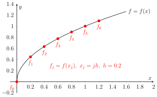

2.2. Finite Difference Operators#
2.2.1. Discrete Data Points and General Sequences#
For a function defined on a continuous domain
we can use a general sequence to represent it at discrete locations
where \(f_j = f(x_j)\).
Usually, though not necessarily, we let \(\left\{x_j\right\}_{j=-\infty}^{+\infty}\) be equally spaced, so
where \(h=x_{j+1}-x_j\) is called the step size (or step length), \(h\in(0,+\infty)\).

Fig. 2.1 A general sequence \(\{f_j\}_{j=0}^{6}\).
Remark 2.1
In Section 1.2, a sequence is defined as a function of integers i.e.
Here we generalise this concept to use a sequence to represent the function at discrete points,
where \(x\) coordinates are not necessarily intergers.
2.2.2. Forward Difference Operator \(\Delta\)#
Definition 2.1 (Forward Difference)
Given a sequence \(\left\{f_j\right\}_{j=-\infty}^{+\infty}\), the first-order forward difference for an member \(f_j\) is the difference between the next member and itself:
and the \(k-\)th order forward difference is defined as:
Example 2.1
\(\Delta f_0 = f_1 - f_0\)
\(\Delta f_{10}= f_{11} - f_{10}\)
Note
For function \(f(x)\), \(x\in\mathbb{R}\) with a step size \(h\),
Second-order Forward Difference:
\[\begin{align*} \Delta^2 f_j & = \Delta(\Delta f_j) \\ & = \Delta(f_{j+1} - f_j) \\ & = \Delta(f_{j+1}) - \Delta(f_j) \\ & = (f_{j+2} - f_{j+1}) - (f_{j+1} - f_j) \\ & = f_{j+2} - 2f_{j+1} + f_j \end{align*}\]Third-order Forward Difference:
\[\begin{align*} \Delta^3 f_j & = \Delta(\Delta^2 f_j)\\ & =\Delta(f_{j+2} - 2f_{j+1} + f_j) \\ & = (f_{j+3}-f_{j+2}) - 2(f_{j+2}-f_{j+1}) + (f_{j+1} - f_{j}) \\ & = f_{j+3} - 3f_{j+2} + 3f_{j+1} - f_j \end{align*}\]Higher-order Forward Difference:
\[ \Delta^n f_j = f_{j+n} - nf_{j+n-1} + \frac{n(n-1)}{2!}f_{j+n-2} - \frac{n(n-1)(n-2)}{3!}f_{j+n-3} + \dots \]
2.2.3. Backward difference operator \(\nabla\)#
Definition 2.2 (Backward Difference)
Given a sequence \(\left\{f_j\right\}_{j=-\infty}^{+\infty}\), the first-order backward difference for an member \(f_j\) is the difference between itself and the previous member:
and the \(k\)-th order backward difference is defined as:
Example 2.2
\(\nabla f_1 = f_1 - f_0\)
\(\nabla f_0 = f_0 - f_{-1}\)
Note
For function \(f(x)\), \(x\in\mathbb{R}\) with a step size \(h\),
Second-order Backward Difference:
\[\begin{align*} \nabla^2 f_j & = \nabla(\nabla(f_j)) \\ & = \nabla(f_j - f_{j-1}) \\ & = \nabla(f_j) - \nabla(f_{j-1}) \\ & = (f_j - f_{j-1}) - (f_{j-1} - f_{j-2}) \\ & = f_j - 2f_{j-1} + f_{j-2} \end{align*}\]Third-order Backward Difference:
\[\begin{align*} \nabla^3 f_j & = \nabla(\nabla^2 f_j)\\ & =\nabla(f_{j} - 2f_{j-1} + f_{j-2}) \\ & = (f_{j}-f_{j-1}) - 2(f_{j-1}-f_{j-2}) + (f_{j-2} - f_{j-3}) \\ & = f_j - 3f_{j-1} + 3f_{j-2} - f_{j-3} \end{align*}\]Higher-order Forward Difference:
\[ \nabla^n f_j = f_j - nf_{j-1} + \frac{n(n-1)}{2!}f_{j-2} - \frac{n(n-1)(n-2)}{3!}f_{j-3} + \dots \]
2.2.4. Shift operators \(\E\) and \(\E ^{-1}\)#
Definition 2.3
Given a sequence \(\left\{f_j\right\}_{j=-\infty}^{+\infty}\), we define \(\E\) as an operator shifting a member in a sequence to the next member
and shifting a member forward \(k\) times gives
Similarly, we define \(\E ^{-1}\) as an operator shifting a member in a sequence to the previous member
and shifting a member backward \(k\) (\(k>0\)) times gives
Note
The forward and backward shifting operations can also be applied to functions defined on continuous domains
\(\E f(x)= f(x+h)\),
\(\E ^{-1} f(x) = f(x-h)\).
If we do shifting for \(k\) times , then
\(\E ^k f(x)= f(x+kh)\)
\(\E ^{-k} f(x) = f(x-kh)\)
Questions
If we shift forward for \(k=0.9\) steps, what we will get?
If we shift backward for \(k=0.9\) steps, what we will get?
Theorem 2.1
The difference operators and shift operators have the following relations:
\(\E =1+\Delta\)
\(\E ^{-1}=1-\nabla\)
Proof (click to show)
Applying the operators on \(f(x)\)
\(\E =1+\Delta\)
\(\E ^{-1}=1-\nabla\)